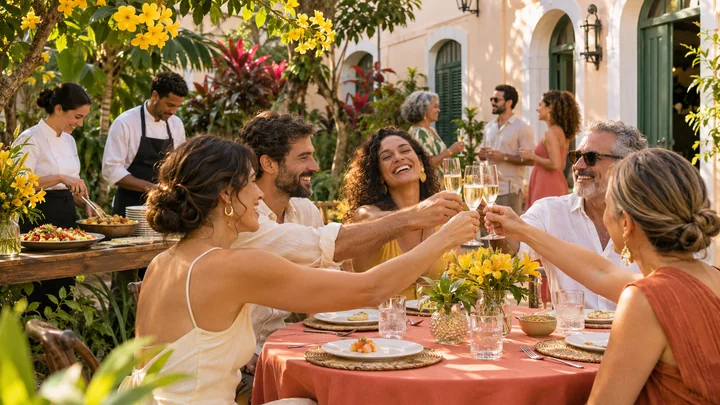
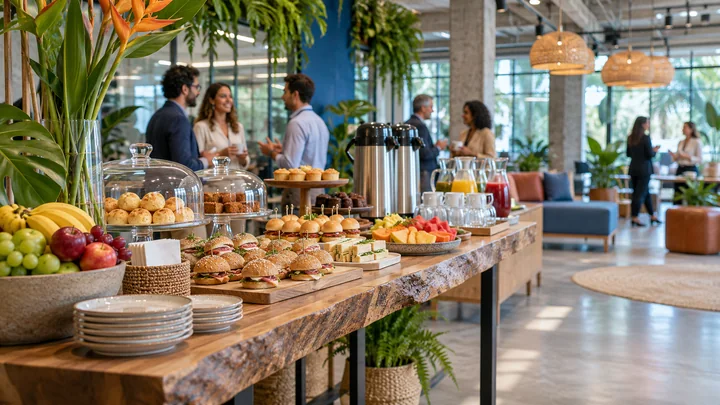
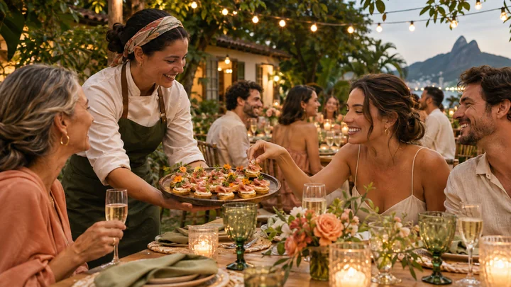

O encontro se estende à mesa.
Tempo para chegar, brindar e comer juntos, com um formato que acompanha a duração da festa.
- Chegada com petiscos
- Refeição à mesa ou em estação
- Doces e café
Compare o ritmo de uma celebração, de uma pausa de trabalho e de uma recepção. O menu começa pelo tipo de encontro.

Tempo para chegar, brindar e comer juntos, com um formato que acompanha a duração da festa.

Uma estação de café e lanches mantém a circulação e ajuda a equipe a retomar a programação no horário.

Bandejas volantes e estações distribuídas permitem conversar com liberdade, sem concentrar todo mundo em uma fila.
Já tem lugar e hora? Conte se há lugares sentados, de quanto tempo você dispõe e se o buffet precisa dividir o espaço com outras atividades.
Leve o formato escolhido para uma conversa com a equipe. Os exemplos ajudam a planejar, sem estimar valor ou confirmar data.